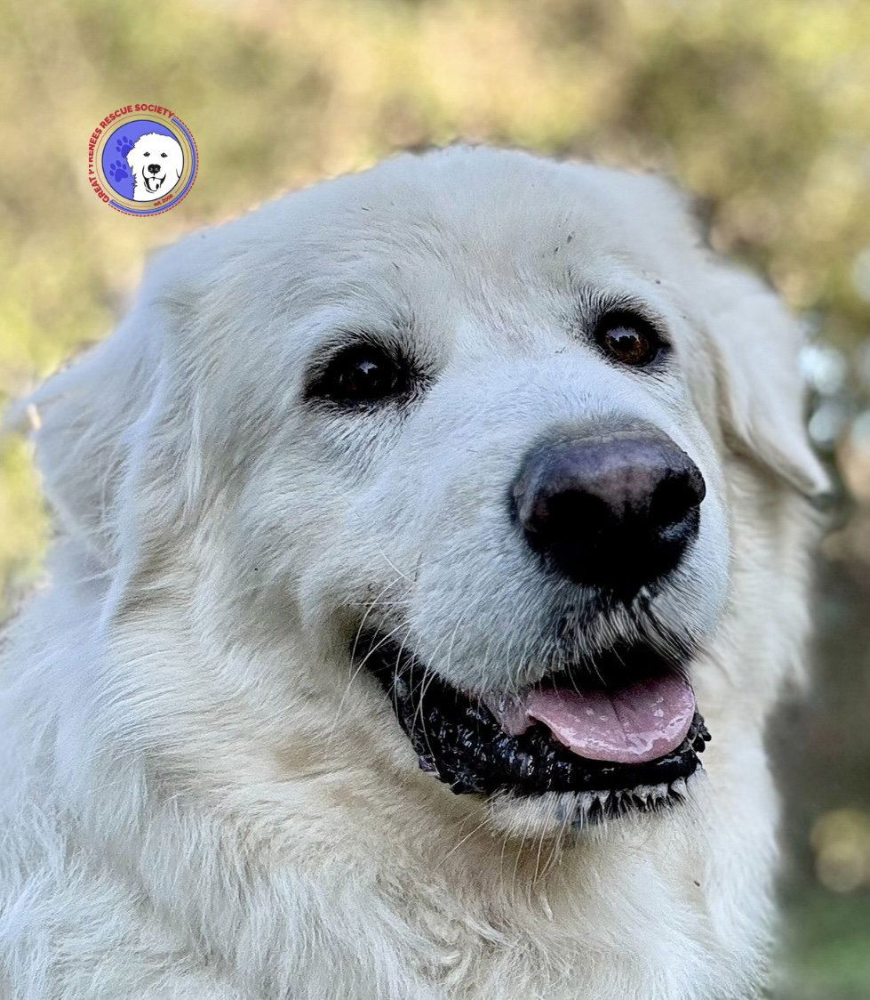
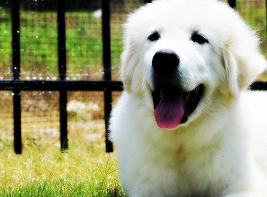

Sir Kingsley
Sir Kingsley is a majestic, confident dog with all the loyalty and independence that make Great Pyrenees so special. Born around December 2022, he’s a devoted companion…
We pull Great Pyrenees from kill shelters across Central Texas, South Texas and Greater Houston, care for them in loving foster homes, and match them with families in Texas and the West.

Every dog lives in a foster home, so we can tell you how they really are with people, other dogs and everyday life.
Sir Kingsley is a majestic, confident dog with all the loyalty and independence that make Great Pyrenees so special. Born around December 2022, he’s a devoted companion…
Hey there! I’m Angel Marie, and I wanted to share a bit about myself now that I’ve settled into my foster home. Looking for a quirky girl? Winning! I love fast walks…
Meet Teagan, a sweet 2-year-old girl with a heart as big as her fur. Teagan is the definition of sweet, cuddly, and laid-back. This fluffball enjoys cuddling up with her…
This dazzling pair are Layla and Boaz. They have that classic Pyr build and are super friendly. Both walk well on a leash and are great with other dogs. Their only…
Terrie is a lovely Badger female Great Pyrenees who truly lights up with joy and excitement whenever it is time for a walk. She possesses a wonderful independent streak…
Meet Izzy, a beautiful Pyrenees girl with a sweetness level that should probably come with a warning label. Born around May 2020, Izzy has main-character energy and a…
Adoption fees are $300–$450 and are listed on each dog's profile. Every dog is vaccinated, including rabies, and spayed or neutered.
Four short sections: about you, your home, yard and vet, your pets, and the dog you love. A volunteer contacts you within 3–4 days.
A screener reviews your application, talks with you about possible matches, and lets you know if you're approved.
Once approved, you complete the adoption contract. We email an invoice for the adoption fee. Pay by card, PayPal, Zelle or Venmo.
Local pickup, or we arrange transport with an experienced pet transport provider. You can also arrange your own.

Great Pyrenees are wonderful, loyal family dogs: even-tempered, affectionate, and especially fond of children. They are also independent thinkers who need consistent training. Before you fall in love, here's what to know:
There are far more Great Pyrenees in Texas shelters than we have room for. Fosters, volunteers and donors are how we say yes to more of them.
The most valuable thing you can do. We can't pull a dog from a shelter without a foster home. We cover vet care, vaccinations and medications.
Learn about fostering →Help with transport, dog walking or grooming in Spring, TX, or pick a remote role like shelter liaison, grant writing or listings.
See volunteer roles →Nine times out of ten, a new dog needs medical care. Every dollar goes straight to the dogs.
Ways to give →“[Add a real quote from an adopter, with their permission]”
— [Adopter first name, city, dog's name]
“[Add a real quote from a foster family]”
— [Foster first name, city]
“[Add a real quote from an adopter in the Pacific NW]”
— [Adopter first name, city, dog's name]
We're an all-volunteer organization, so 100% of donations go directly to the dogs in our care.